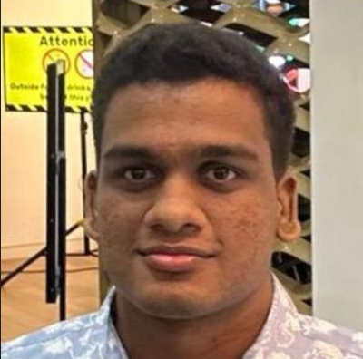

Lakshan Cooray
I am a final-year undergraduate student in Artificial Intelligence and Data Science at the Informatics Institute of Technology, Colombo, Sri Lanka, affiliated with Robert Gordon University, UK. My research focuses on developing and evaluating low-parameterized language models for customer service conversations.
I have experience in deep learning, NLP, computer vision, and edge AI systems. My work spans instruction-tuning of small language models, knowledge graph construction with retrieval-augmented generation, and edge AI deployment for real-world applications.
My research is supervised by Deshan Sumanathilaka.


Education
2023-2026 | BSc (Hons) Artificial Intelligence & Data Science
Informatics Institute of Technology, Colombo, Sri Lanka
Affiliated with Robert Gordon University, UK
Thesis: Developing and Evaluating Low-Parameterized Language Models for Customer Service Client-Agent Conversations
Supervisor: Deshan Sumanathilaka
2021-2022 | Foundation Diploma in Computer Science
Australian College of Business Studies, Sri Lanka
Affiliated with Edith Cowan College, Australia. Achieved 8 Higher Distinction Passes (HD)
2020-2022 | GCE Advanced Level (Physical Science)
Ananda College, Colombo 10, Sri Lanka | Grade 12-13
2009-2020 | GCE Ordinary Level
D.S Senanayake College, Colombo 07, Sri Lanka | 9A Passes
Professional Experience
Nov 2024 - May 2025 | Associate Data and AI Engineer
Arimac Lanka (Pvt) Ltd, Sri Lanka | On-site
May 2024 - Nov 2024 | Intern Data and AI
Arimac Lanka (Pvt) Ltd, Colombo, Sri Lanka | On-site
Technical Skills
Python, R, Java, LaTeX (Overleaf), TensorFlow, PyTorch, Flask, Fast API, Machine Learning, Deep Learning, Natural Language Processing, Computer Vision, Edge AI, Large Language Models (LLMs), Small Language Models (SLMs), Prompt Engineering, Power BI, Docker, Git